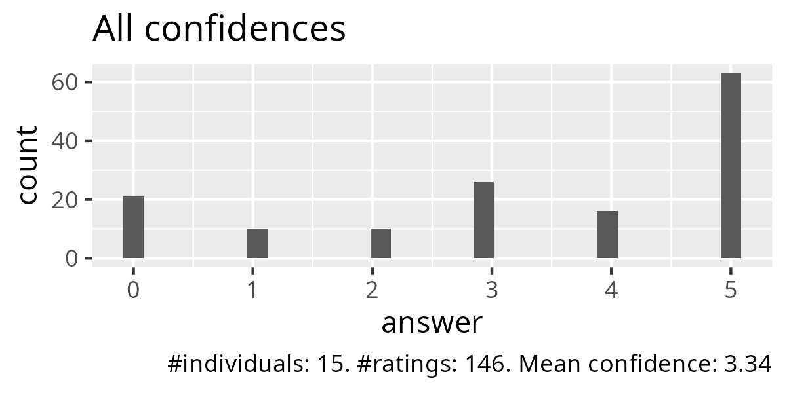
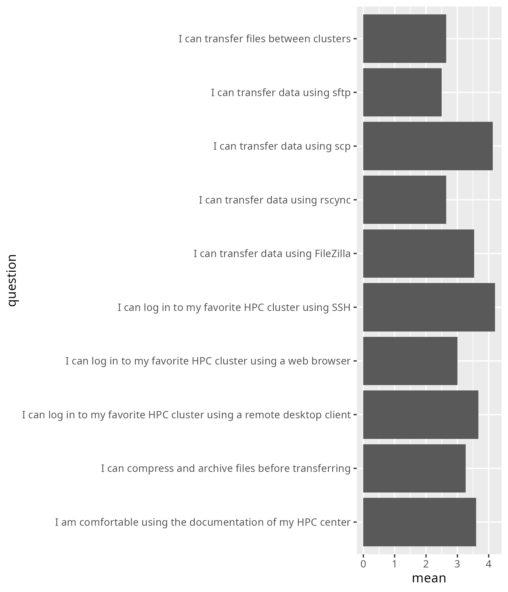
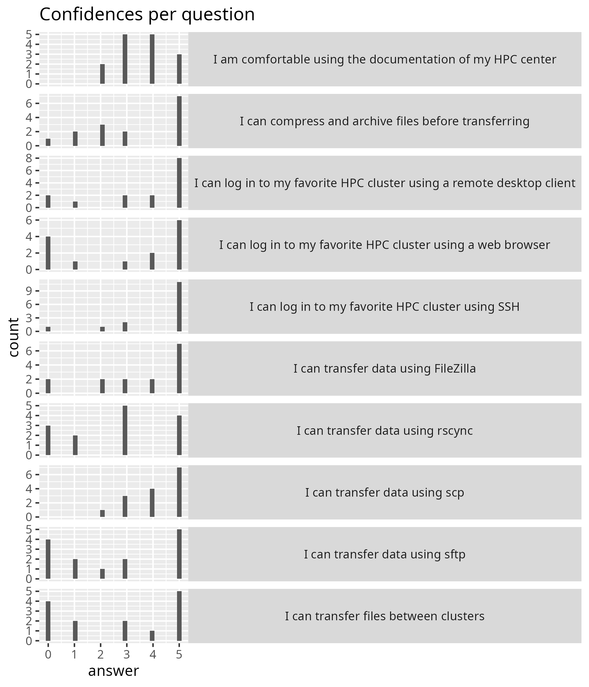

Reflection¶
- Author: RB
- Date: 2026-02-02
- Lesson plan
- Evaluation
- Reflection
Before teaching that day¶
I expected to be preparing in the morning, yet I turned into a technical assistant, as it is UPPMAX that hosts the Zoom rooms. Logging into Zoom with my email address turns me into a host automatically. Great!
It did me I would have to make all others co-host by hand. I appeared to be the least stressed of the three UPPMAX staff, so I sent the others away.
First hour¶
I was unhappy, because:
-
I did not have/take the time to talk about HPC clusters in general. One learner indicated this too. I did predict we would be too short on time, but maybe this is more nuanced: I felt short on time and was afraid to take time away from my colleague.
-
[ ] Ask colleague: should we take the time to properly introduce HPC clusters with a Prior?
-
[ ] Remember: always dare to do a proper teaching cycle
-
-
I feel the NAISS Intro week should start with a general talk about HPC clusters, after which all learners login.
- [
DONE] Suggest to NAISS, see below
- [
-
The flowchart in 'Connect Intro' seemed to be too complex, even though it only had one question.
- [
FIXED] One problem is the word 'ThinLinc' in it: it should have been 'remote desktop client'. - [
FIXED] I've added a table, better flowchart, etc. I am reasonably happy with it now
- [
-
There were too many black screens. This course mentions that a good camera setup is strongly recommended. I asked 3 learners I met in a breakout room: 3 out 3 did not have a camera installed. This may have a historical reason too: in the morning 'Command line 101', there was a recording of the session, with only 1 or 33 learners having on their camera. I asked the learner: he/she kept the camera on as he/she thinks it is nicer for the teacher. I can imagine the learners expect more passive learning after lunch.
- [ ] Ask NAISS training coordinator: could it be clearer advertised to have cameras?
- [ ] Ask NAISS training coordinator: could we be first on the day?
Additionally, there was no Prior. This gives learners a reason to turn on their cameras. During the day, however, more learners turned on their cameras.
| Time | n_on |
n_off |
n_learn |
n_teach |
n_total |
|---|---|---|---|---|---|
| 13:15 | 1 | 24 | 25 | 2 | 27 |
| 14:07 | 6 | 19 | 25 | 2 | 27 |
| 15:51 | 10 | 3 | 13 | 2 | 15 |
I was unhappy with assigning breakout rooms to the learners. I used the schedule below:
| HPC cluster name | Main breakout room |
|---|---|
| Alvis silent | Room 1 |
| Alvis group | Room 2 |
| Bianca silent | Room 3 |
| Bianca group | Room 4 |
| COSMOS silent | Room 5 |
| COSMOS group | Room 6 |
| Dardel silent | Room 7 |
| Dardel group | Room 8 |
| Kebnekaise silent | Room 9 |
| Kebnekaise group | Room 10 |
| Pelle silent | Room 11 |
| Pelle group | Room 12 |
| Tetralith silent | Room 13 |
| Tetralith group | Room 14 |
| Other silent | Room 15 |
| Other group | Room 16 |
| Any, free to use | Any other room |
I am happy that I tried to dare things out! However:
- It was too unclear to learners which HPC cluster they have: suggest to NAISS to dedicate 1 hour to this, see below
- It was too unclear which learners were actually there: again, use a Prior to get more cameras on
- It was too unclear for learners what to do in a breakout room: simplify text: done!
There was a better way before that I used:
- Ask learners to raise their hand if they want to work alone, then assign them to a room myself
- Couple the remaining learners myself in groups of two
Use this way again next time: it is worth the time!
- [
DONE] Add to course material
One feature of the disconnect with the learners (i.e. the many black screens) is that it became awkwardly clear how many were actually there! After most learners found their room, there were still around eight black screens (around a third!). Some of these were learners that came back to the course later. Some of these learners never showed any sign of life at all.
The observer mentioned that there was a question in the Q&A section of the Zoom room. The Q&A was enabled for the teachers that used the same Zoom room in the morning. I answered the question and turned of the Q&A.
- [ ] Remember: disable the Zoom Q&A
Thanks to the previous observer, I used my SciLifeLab account to create a Google Form, as it would look more professional. However, the evaluation forms were not open to all (they were only open to SLL people). Luckily, the third learner that was sent home earlier tried it out and told me. Together, we fixed it.
- [ ] Remember that a Google Form on my SciLifeLab account needs to open up the URL to all
During the course, things did ease up: more people turned on their cameras and I had fun and useful interactions. My colleague was great here too: this was the first course where I could not go through all the breakout rooms in less than 5 minutes. I assume this worked so badly, because there was never made a proper connection to the learners. Again, dare to do proper teaching!
I was happy to have done some polls, confirming that we did achieve the intended learning outcomes:
- After the first break: all learners were able to login in at least 1 way
- After the second break: all learners were able to transfer files in at least 1 way
- At the end of the day: 9 out of 10 learners were able to transfer files in at least 2 ways
I was happy how it worked out with my colleague teacher. We met before the teaching and discussed how to decide on how to follow the learners. We decided to make those decisions in the breaks. We did. It worked great. Besides that, we both went through the breakout rooms (from different directions). We seem to know what to do.
I did miss his ideas on how the day went. He seemed stressed, as he had to teach the day after too. Instead of pressing him for time, I let him get back to work. I think that that is the better choice. But I do miss hearing his ideas :-)
I was happy how it worked with the observer. She was properly introduced and she got properly ignored by the learners. Even though this lesson was less of a success, I am happy to be able to discuss this with her and find out what she suggests.
Recommendation to NAISS¶
I think the NAISS Intro Week should be a gentle and easy first week to work with our HPC clusters. I would say it is more important to adapt to our learners than fit in as much content as possible.
Due to this I recommend:
- 1 hour for introduction to HPC, including SUPR
- 2 hours for the 'Connect' part
- 3 hours for the 'File transfer' part
Having this course the full first day would help even the utmost beginner to have an easy first day on our HPC clusters. I think we should prefer this over rushing our new users.
Evaluation results¶



These are all the questions:
| Question | Mean confidence |
|---|---|
| I am comfortable using the documentation of my HPC center | 3.6 |
| I can compress and archive files before transferring | 3.3 |
| I can log in to my favorite HPC cluster using SSH | 4.2 |
| I can log in to my favorite HPC cluster using a remote desktop client | 3.7 |
| I can log in to my favorite HPC cluster using a web browser | 3 |
| I can transfer data using FileZilla | 3.5 |
| I can transfer data using rsync | 2.6 |
| I can transfer data using scp | 4.1 |
| I can transfer data using sftp | 2.5 |
| I can transfer files between clusters | 2.6 |
Now, only the ones we focussed on:
| Question | Mean confidence |
|---|---|
| I am comfortable using the documentation of my HPC center | 3.6 |
| I can log in to my favorite HPC cluster using SSH | 4.2 |
| I can log in to my favorite HPC cluster using a remote desktop client | 3.7 |
| I can log in to my favorite HPC cluster using a web browser | 3 |
| I can transfer data using FileZilla | 3.5 |
| I can transfer data using scp | 4.1 |
| Average | 3.7 |
The weakest session was 'I can log in to my favorite HPC cluster using a web browser', which is not possible on all HPC clusters, hence the value will be lower. I find it weird that the easiest session is the weakest. I predict this is because the confusion was highest there. I should dare to do proper teaching.
The average of 3.7 means a success score of 74%.
Compare to other course iterations, this is not the lowest value. Other values are 66%, 91%, 70%, 85%. From this, we can conclude we achieved more than that we sometimes do when we only do 'File Transfer'. Something to be happy about!
Any other feedback?¶
Here I copy-paste from the evaluation. I also cut up suggestions.
- :-)
:-)
- I did all of the things before in self-study when I started with HPC a couple of months ago but it was great to have some dedicated time to read the documentation in more detail during this course and have a platform for questions. Thanks for your time!
Great!
- I received no zoom link to the course, but I did some self studying instead.
I wonder how this learner did not receive a Zoom link to the course.
-
[ ] Share in NAISS Matrix
-
I could not find any documentation about how to use a web browser to log in to Tetralith. Please add that information in the course!
The learner is right: there is no documentation on how to login to Tetralith via a web browser.
-
[ ] Suggest to NSC to mention this in their documentation
-
SSH does not work for me behind a firewall.
If SSH does not work behind a firewall, then the learner cannot login I guess ...? I wish he/she was in the course!
- Awesome course, but it would be nice to have more time, like 4h instead of 3h to really have time to do all the exercises
I agree!
- I like the course because it starts from the basics, and i like that it's not too fast. Thank you very much for organizing this!
Thanks!
- Great and informative course! There some minor questions resulting of missing information in the course docs but were cleared after consulting the instructors.
I agree! It is a mild shame that not everything is correct, even though we test thoroughly. It is great that we actually find this out during a course, because we interact with our learners.
- I think I would have needed more time to figure everything out. Now at least I think I have a better way of finding out how to do stuff by myself.
I agree.
- I think it would have been better to start the day by explaining what an HPC cluster is, then practicing logging into the cluster, then having LINUX 101 and after that having the file transferring course.
I agree!
- I had already figured out on my own how to log in to the clusters since I thought I needed it for the LINUX course. So for me, too much time was placed on learning how to log in and to little time on how to transfer files.
I agree!
- I also feel like the documentation on LUNARC is lacking.
I think this learner used COSMOS-SENS. Indeed, there is nearly no documentation for that.
-
[ ] Share with LUNARC colleagues
-
Richel has a nice sense of humor that keeps things lively and active.
:-)
- Bjorn's explanation of the file transfer was much appreciated.
Well done Björn!
-
[
DONE] Share with Björn -
I learnt some nifty tools in the command line thanks to Sahar.
Well done Sahar!
-
[
DONE] Share with Sahar -
There are different clusters (I think this is the name?) and it can be difficult to know the process on the particular one we are working on.
I agree. There should be an intro on clusters indeed.
- Documentation seems to be all over the place, although at least it feels better knowing that I am not the only one with this problem.
I agree. I should have taken the time to properly introduce the website.
- The use of the Word document to answer questions was unorthodox, although it did work well.
This course did not use Word to interact with our learners.
- Have a single NAISS Intro Week course page, with timetables and links to the materials (the email you sent is a good starting point)
I agree. I wish there was a prettier timetable.
- Explain a bit more of WHY we do things. It can be obvious to a practitioner, but to someone new it can be confusing.
I agree. I should have taken the time to do proper teaching.
- Continuously take feedback like this and the NAISS Intro Week will naturally get better and better over time :)
I agree. Thanks!
Conclusion¶
- Demand more time, so that I dare to take the time for proper teaching
- Ask colleague to agree to take more time
- Take the time to do proper teaching
- Keep trying out things, adapt if it fails
- We can be proud of the confidences in learning outcomes